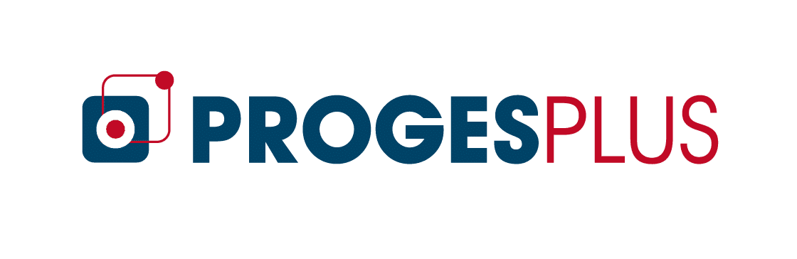
Stage - Proges Plus
Mai - Juin 2026
Durée : 2 mois

Mai - Juin 2026
Durée : 2 mois
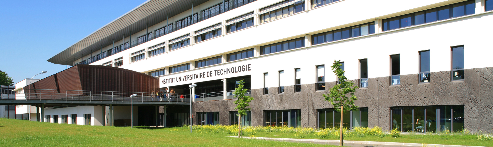
BUT1 - 36ème sur 130
BUT2 - en cours
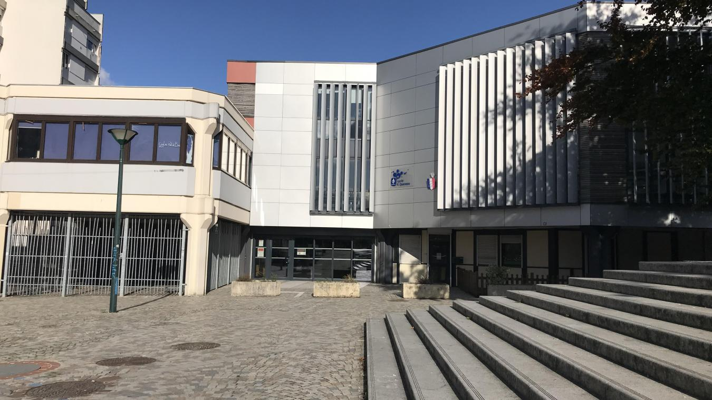
Spécialité Mathématiques
Spécialité Numérique et Sciences Informatiques
Option Mathématiques Expertes
Mention Bien

Projets Liés

Projets Liés
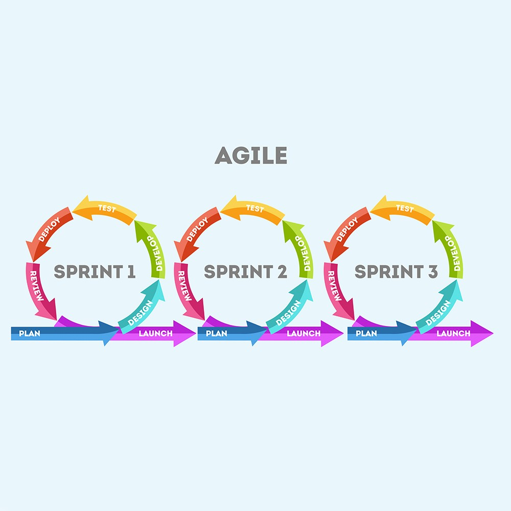
Projets Liés
Projets Liés
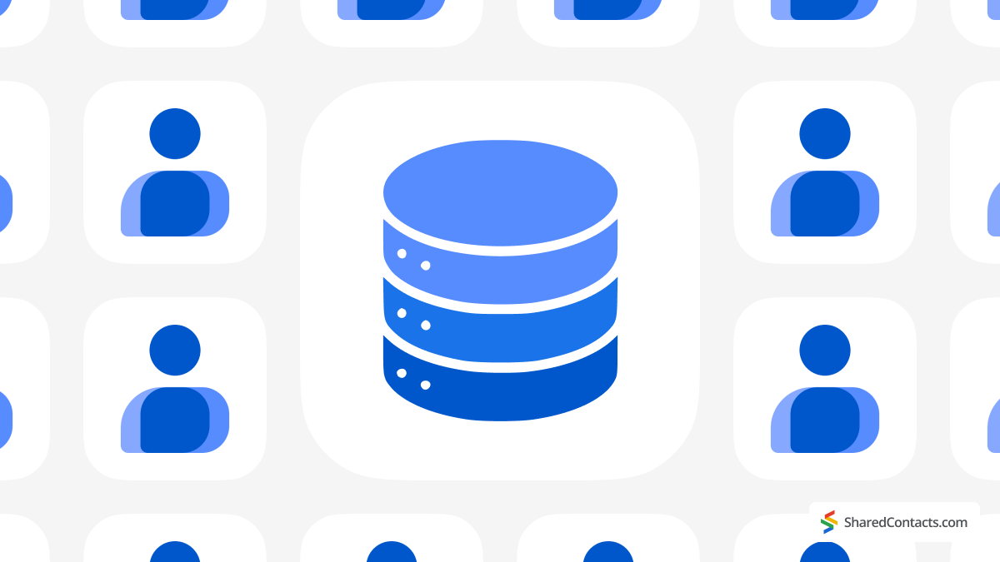
Projets Liés
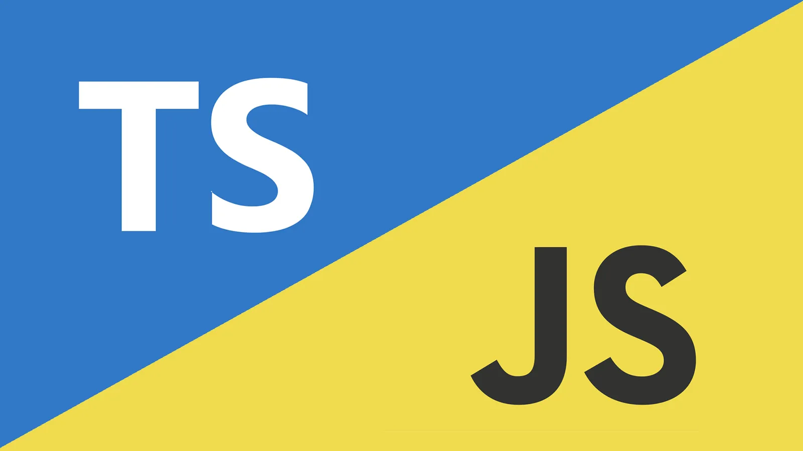
Projets Liés
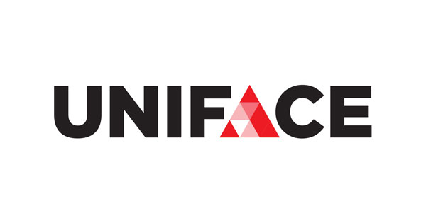
Stage
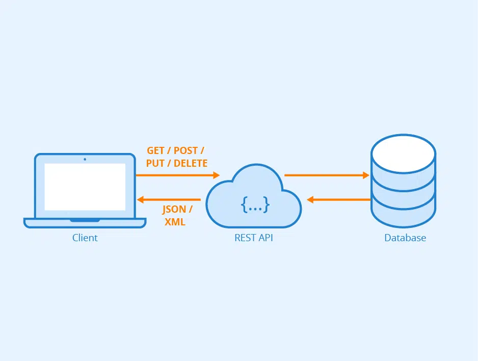
Projet d'une API REST développé dans le cadre d'une SAÉ, avec une structure GitLab et une documentation dédiée.
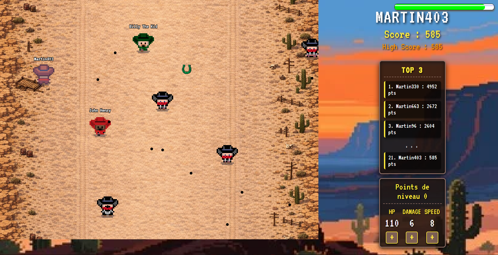
Jeu multijoueur de type 'shoot them up' dans un univers far-west. Un jeu en 2D où l'on peut se déplacer au clavier ou à la souris, combattre des ennemis et participer avec ses amis.
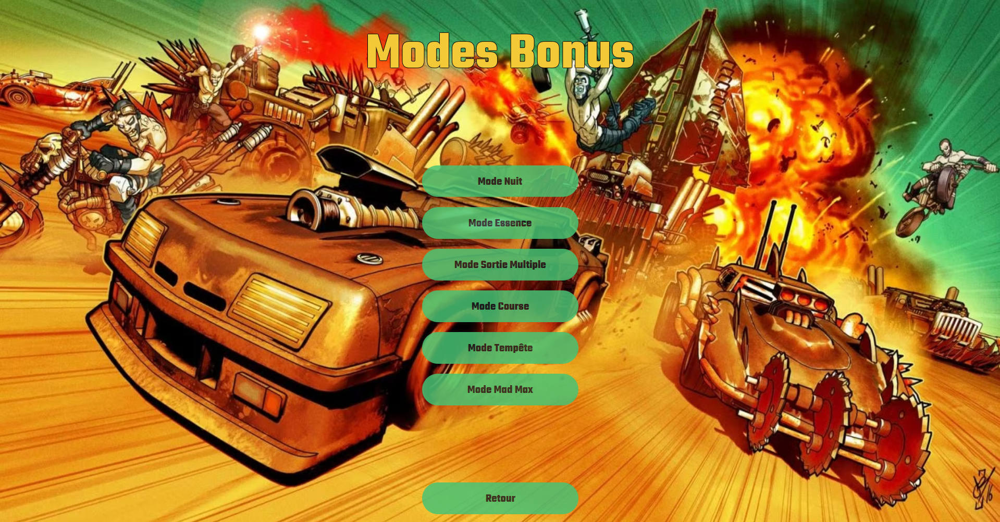
Le but de ce projet était de réaliser un jeu en JavaFX dans lequel il fallait terminer des labyrinthes. Nous sommes partis sur le thème de Mad Max d'où le nom "Mad Maze".
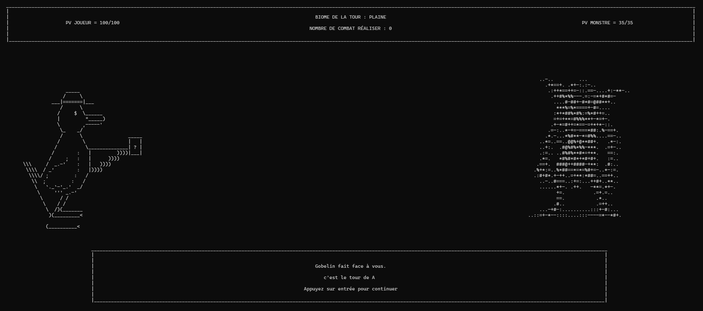
L'objectif de ce projet était de réaliser un jeu en se basant sur la méthode Agile. Pour cela, nous avons été accompagnés par des experts de la méthode pour nous guider.
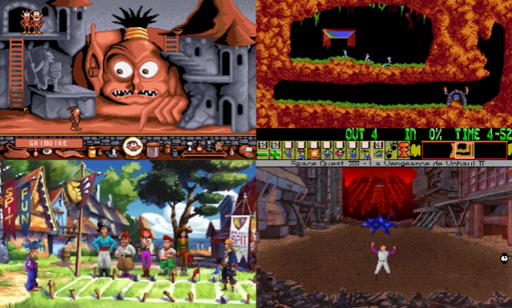
L'objectif de ce projet était de réaliser une vidéo de vulgarisation sur un thème lié à l'informatique, un événement ou une personnalité marquante.

Dans ce projet, l'objectif était de simuler la création d'une entreprise.

Dans ce projet, nous devions réaliser une application permettant de gérer des séjours linguistiques entre plusieurs établissements.
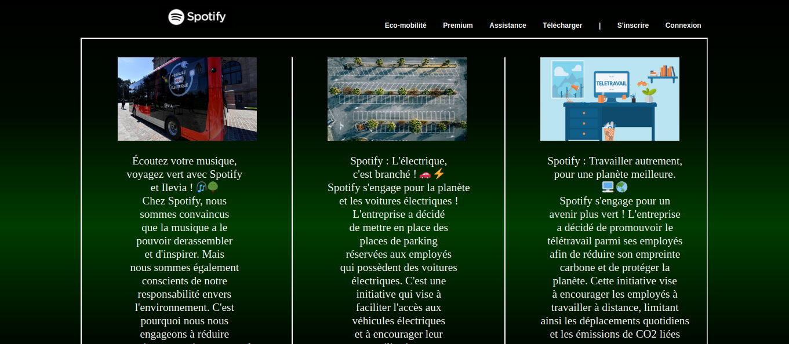
Dans ce projet, nous devions réaliser un site web sur l'entreprise de notre choix, mettant en avant les actions d'éco-mobilité mises en place.
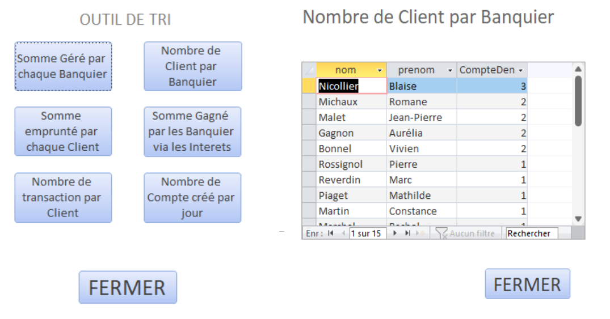
Ce projet nous demandait de réaliser une base de données sur Access pour une entreprise tirée au sort.

L'objectif de ce projet était d'installer une machine virtuelle Linux et de comprendre le bon fonctionnement d'Oracle VM VirtualBox.
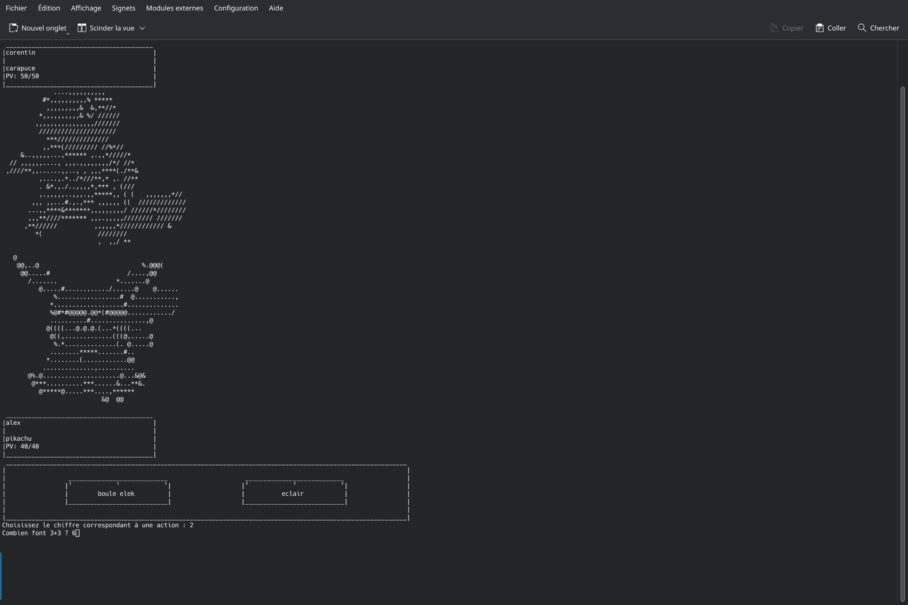
L'objectif de ce projet était de réaliser un jeu ludo-pédagogique en IJava, qui est une version simplifiée de Java.
 Discord : antique06
Discord : antique06